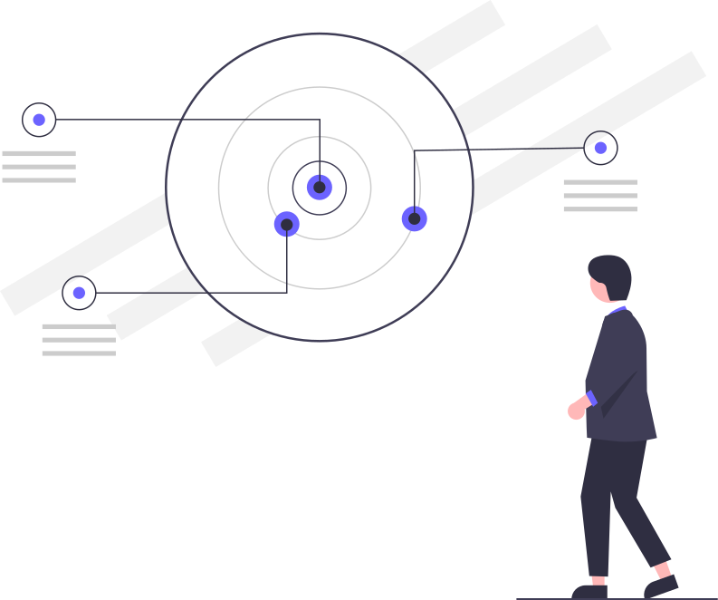

How to pick
Your action item
Generation 1
Frequency rank #1 of 50
Most commonly cited in software retrospectives
- Owner
- Due
- Success metric
Ready for Confluence, Jira, Miro, or the retro column nobody checks next sprint.
Shortcuts: R generate · C copy
Browse full ranking — all 50 items in descending frequency order
Ranked from industry-wide retro patterns: communication, meetings, tech debt, and documentation lead every time.